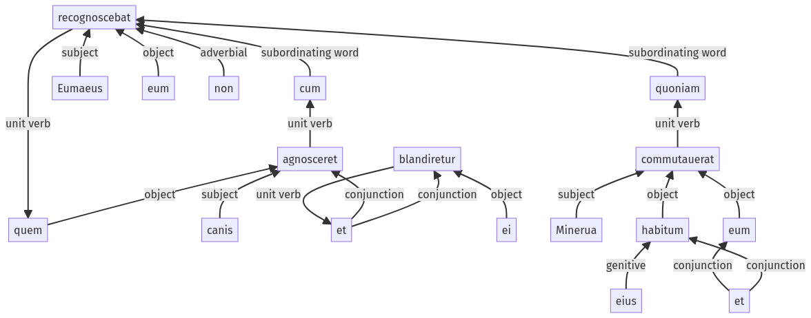

Hyginus, Fabuleer, 126a.1.30-126a.1.47a
126a.1.1-126a.1.29a | 126a.2.1-126a.2.12a
Sentence 1275
126a.1.30-126a.1.47a
quem canis cum agnosceret et ei blandiretur, Eumaeus eum non recognoscebat, quoniam Minerua eum et habitum eius commutauerat.
2 canis cum agnosceret
2 et ei blandiretur
1 Eumaeus eum non recognoscebat
2 quoniam Minerua eum et habitum eius commutauerat
quem canis cum agnosceret et ei blandiretur, Eumaeus eum non recognoscebat, quoniam Minerua eum et habitum eius commutauerat.
Highlighting:
- connecting words
- unit verb
- subject
- object
Color code:
- independent clause (level 1, transitive verb)
- subordinate clause (level 2, transitive verb)
- subordinate clause (level 2, transitive verb)
- subordinate clause (level 2, transitive verb)
